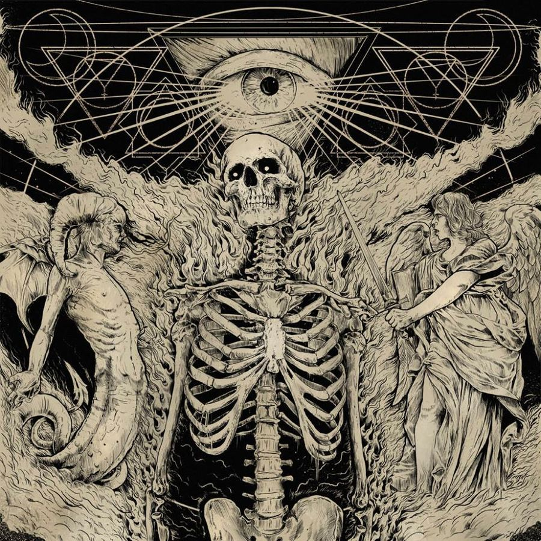
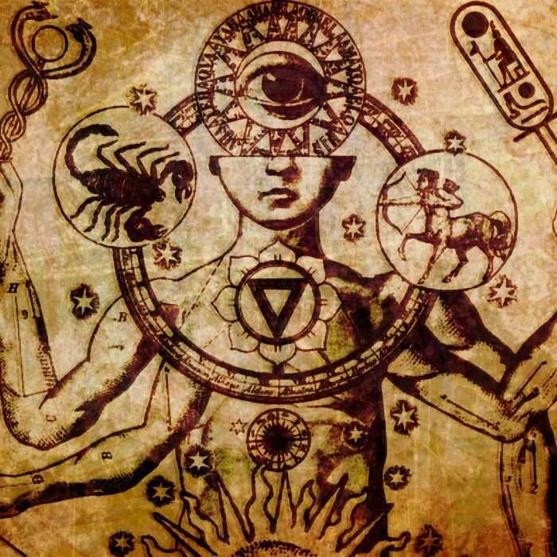
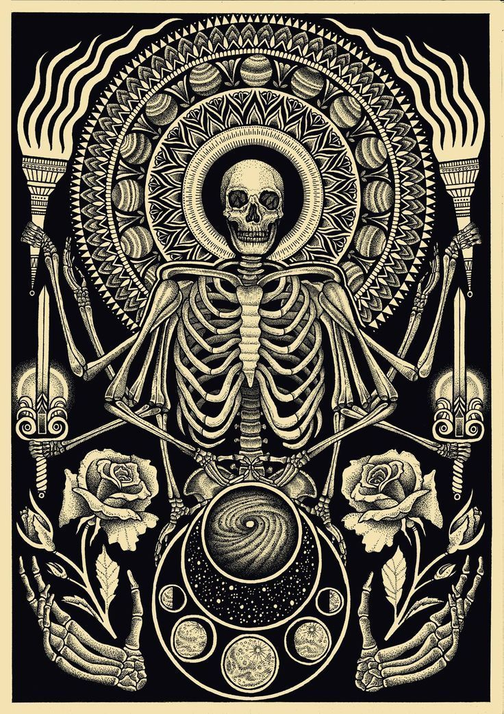
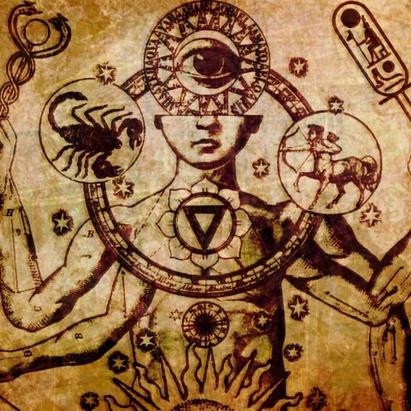
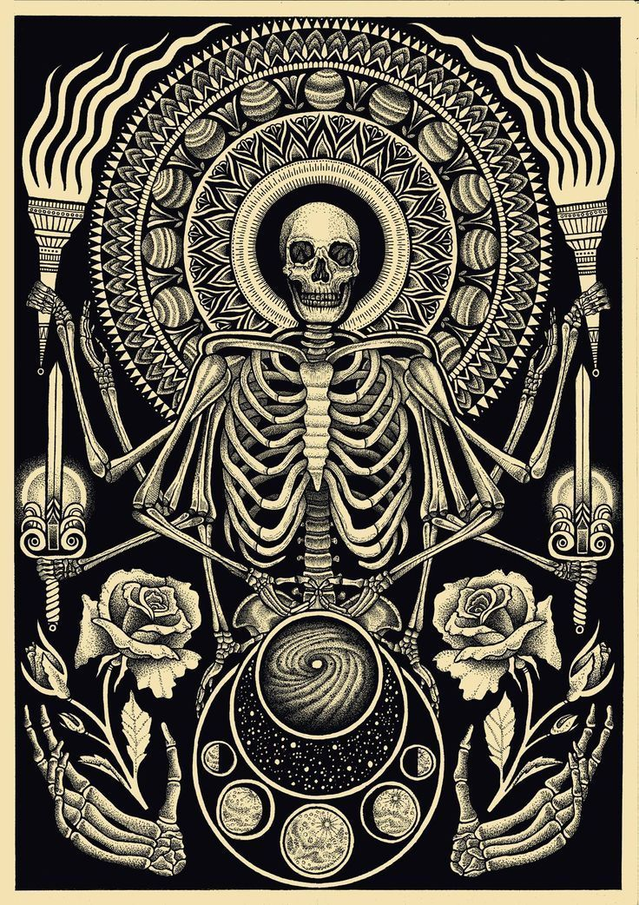
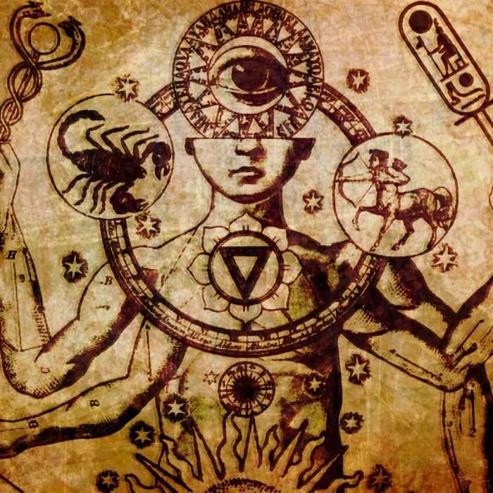
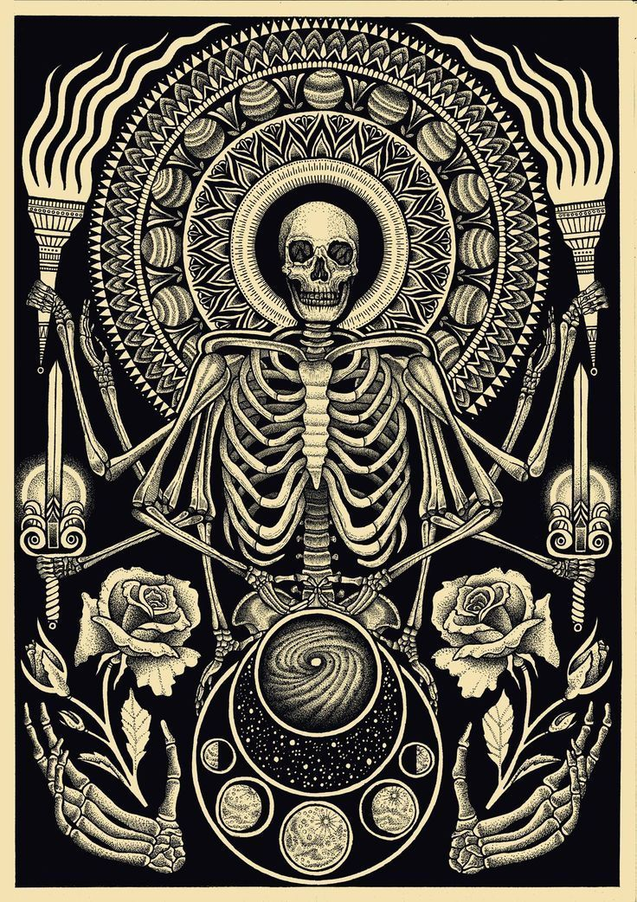

Оккульти́зм (фр. Occultisme от лат. occultus — скрытый, тайный) — общее название оккультных наук и искусств (оккультная философия, алхимия, астрология, магия, теургия, психургия, онейрокритика, некромантия и др.), касающихся скрытых и неизвестных сил и явлений в человеке, космосе и природе. Впервые термин «philosophia occulta» («тайная философия») был употреблен в XVI веке Агриппой Неттесгеймским, термин «оккультные науки» (фр. sciences occultes) восходит к названию книги Эзеба де Сальверта, а термин «оккультизм» был введён в широкое употребление Элифа́сом Леви́ в 1856 году. К 1884 году Жозеф Пеладан под «оккультизмом» подразумевал все «оккультные науки».
Оккультизм — это «скрытое знание», в отличие от «открытого знания», обычно называемого «наукой»; также это учение о «скрытых способностях человека» и «незримых силах природы». . Иногда называется герметизмом, по имени одного из мифических персонажей, Гермеса Трисмегиста, обозначает традиции ритуальных магических практик, тайных (англ. arcane) знаний. Современная наука классифицирует большинство оккультных учений как «паранормальные верования. В некоторых источниках написано что блягодоря ей можно приручить магических существ (магических тварей).

 





44444